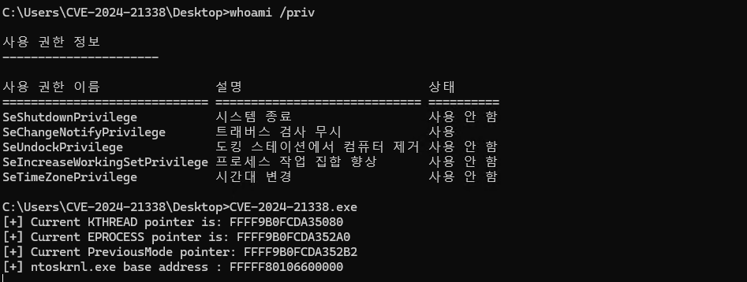
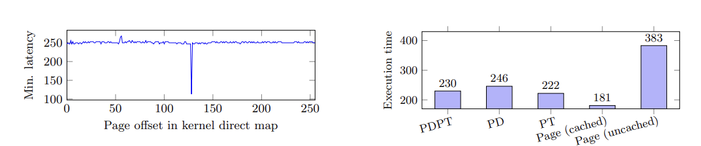
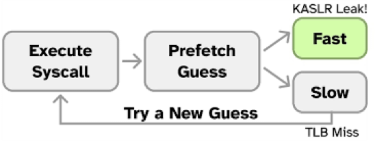
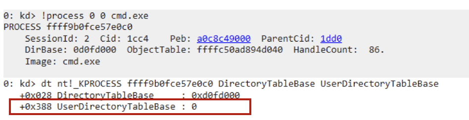
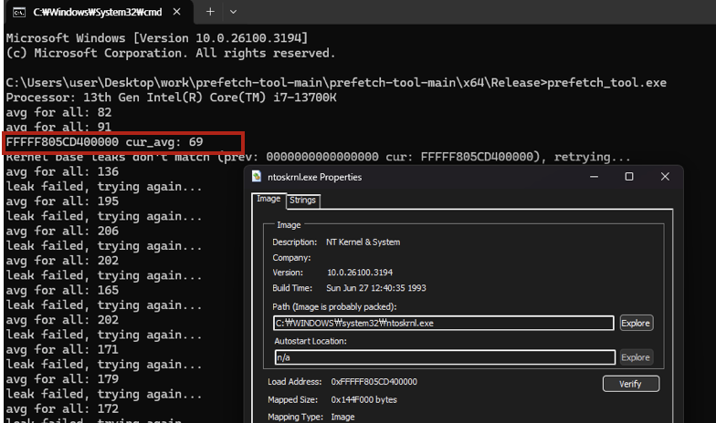

[Research] Bypassing Windows Kernel Mitigations: Part0 - Deep Dive into KASLR Leaks Restriction (En)
Bypassing Windows Kernel Mitigations: Part0 - Deep Dive into KASLR Leaks Restriction (Ko) ← Now
Bypassing Windows Kernel Mitigations: Part1 - Overview
Bypassing Windows Kernel Mitigations: Part2 - CVE-2024-21338
Hello, this is L0ch!
Originally, I was planning to write a post on the I/O Ring exploit, but I ended up diving deeper into a topic from Part 1 and decided to create this as a kind of side story. That’s why I’ve numbered this part as 0 😄
In this post, we’ll take a closer look at the new KASLR-related mitigation introduced in Windows 11 and Windows Server 24H2, and explore a novel method for bypassing it.
Before we begin, I highly recommend reading the Windows Kernel Mitigation Part 1, especially the section on kASLR (Kernel Address Space Layout Randomization).
KASLR Bypass
Prior to version 24H2, it was possible to call NtQuerySystemInformation from a process running at Medium Integrity Level and obtain various kernel object addresses, including the image base of ntoskrnl.exe—all at once. These details were highly useful for kernel exploitation.

By leveraging these leaked addresses, an attacker could locate gadgets in ntoskrnl.exe, tamper with fields like PreviousMode or SeDebugPrivilege, and so on.
Analysis of KASLR Mitigation in 24H2
To utilize NtQuerySystemInformation, one would typically load ntdll.dll, retrieve the address of the function using GetProcAddress, and then invoke it. The actual implementation follows this call chain:
(ntdll) NtQuerySystemInformation(ntoskrnl) NtQuerySystemInformation(EX)(ntoskrnl) ExpQuerySystemInformation
Ultimately, the ExpQuerySystemInformation function receives an enumeration value that determines which internal subroutine is executed to return the requested system information.
When examining the xrefs of these subroutines, many of those that deal with kernel-related information invoke the ExIsRestrictedCaller function.
Let’s look into ExIsRestrictedCaller. We can see a call to Feature_RestrictKernelAddressLeaks_private_IsEnabledDeviceUsageNoInline(), which is a new feature flag introduced in 24H2. If this flag returns true, the function checks whether the caller possesses SeDebugPrivilege via a call to SeSinglePrivilegeCheck(SeDebugPrivilege, a1). If the privilege is absent, ExIsRestrictedCaller returns true, indicating that the caller is restricted.

The code snippet below shows a subroutine invoked when the enumeration value is SystemModuleInformation. If ExIsRestrictedCaller returns true, the subroutine skips the call to ExQueryModuleInformation and returns an error instead.

As a result, processes running at Medium Integrity Level without SeDebugPrivilege can no longer retrieve any meaningful results using NtQuerySystemInformation to leak kernel addresses.
At this point, one might wonder: Do we now need to find additional infoleaks when developing LPE exploits for Windows? Fortunately, there’s still a viable sidechannel-based bypass.
EntryBleed (CVE-2022-4543) and Prefetch Sidechannel
Before diving into the bypass, we need to understand the KPTI (Kernel Page Table Isolation) protection used in Linux and the EntryBleed vulnerability (CVE-2022-4543).
KPTI removes most kernel memory mappings from user-mode page tables, only retaining minimal virtual kernel memory required for exception/signal/syscall handling. This prevents user-mode from learning kernel address mappings.
This was introduced in response to the infamous Meltdown and Spectre attacks disclosed in 2018. Since those vulnerabilities rendered KASLR ineffective, OS vendors adopted stricter memory isolation at the page table level.
Fun fact: back then, there was widespread concern that CPU vendors would go under. And well… Intel’s current trajectory isn’t looking so great either. 😅
With KPTI enabled, only minimal kernel mappings (e.g., for syscalls and interrupts) remain in the user address space.
Source: https://en.wikipedia.org/wiki/Kernel_page-table_isolation
The EntryBleed vulnerability leverages a prefetch sidechannel to identify syscall handler addresses residing in the user-mode page tables, thus bypassing KPTI.
Even with KPTI enabled, the kernel’s entry_SYSCALL_64 address (used during 64-bit syscall transitions) remains mapped. The attack uses this fact to infer kernel base addresses.
x86_64 architecture features a TLB (Translation Lookaside Buffer) to cache recent virtual-to-physical address translations, and supports prefetch instructions that load data into the CPU cache.
When a prefetch instruction targets an address already present in the TLB, it skips the page walk and executes faster.

Execution time differences depending on whether the page is cached
Source: https://gruss.cc/files/prefetch.pdf
This timing difference can be exploited as follows:
- Repeatedly invoke a syscall to ensure
entry_SYSCALL_64is cached in the TLB. - Iteratively execute prefetch instructions over the potential kernel address range:
0xffffffff80000000 - 0xffffffffc0000000
- If execution is slow → address likely not cached → continue scanning.
- If execution is fast → cached
entry_SYSCALL_64hit → compute the kernel base via known offset.

Using timing differences of prefetch instructions to leak kernel addresses
Source: https://gruss.cc/files/prefetch.pdf
Bypassing KASLR Mitigation in 24H2
The same prefetch-based sidechannel technique from EntryBleed is also applicable to Windows!
Windows has a similar KPTI-inspired mitigation called KVA (Kernel Virtual Address) Shadowing. This was Microsoft’s response to Meltdown/Spectre, implementing kernel/user address space separation at the software level. However, recent Windows builds have KVA Shadowing disabled by default.

We can tell it’s disabled because KPROCESS.UserDirectoryTableBase contains a null value, which would otherwise point to a valid address if KVAS were active. Since modern CPUs are generally immune to Meltdown/Spectre, Microsoft likely chose to disable KVAS by default to avoid performance degradation.
This means: kernel addresses are still mapped in the user-mode page table—and thus, prefetch-based leaks are feasible.
Let’s analyze the sidechannel procedure from a PoC shared by exploits-forsale.
Source: https://github.com/exploits-forsale/prefetch-tool/blob/main/prefetch_tool/prefetch_asm.asm
- Orange box: Accepts the first prefetch target address in
rcx. - Red box: Uses
prefetchntato specify non-temporal prefetching andprefetcht2to load the operand into the L2 cache. Measures execution time to infer TLB caching. - Blue box: Uses
lfenceandmfencefor instruction serialization to ensure accurate timing.- Execute all previously loaded instructions in memory and enter
- Force instruction execution order, remove optimization

On my test environment (13th-gen Intel CPU), I was able to resolve the ntoskrnl.exe base address within a few seconds.
There are, however, two major caveats:
- This technique is reliable only on recent Intel processors. On AMD CPUs, results are inconsistent.
- Unlike the legacy
NtQuerySystemInformationmethod, which could reveal addresses of various kernel objects (e.g., KTHREAD, pools), this approach only leaks the kernel image base—making it comparatively less versatile.
Ultimately, the permission restrictions added to NtQuerySystemInformation in 24H2 have a significant impact on kernel exploitation strategies.Looks like understanding the CPU manual is now a prerequisite for kernel work…
Conclusion
In this post, we examined the mitigation patch applied to NtQuerySystemInformation, a long-time staple in Windows kernel exploitation. We also explored how this led to the need for new KASLR bypass techniques, specifically through sidechannel-based kernel infoleaks.
In my opinion, the availability of NtQuerySystemInformation had previously stifled research into novel KASLR bypasses. With the new 24H2 mitigation in place, we may finally see a renewed wave of creative approaches in the kernel exploitation space.
See you in the next post—where we’ll return to the I/O Ring exploit!
References
https://windows-internals.com/kaslr-leaks-restriction/